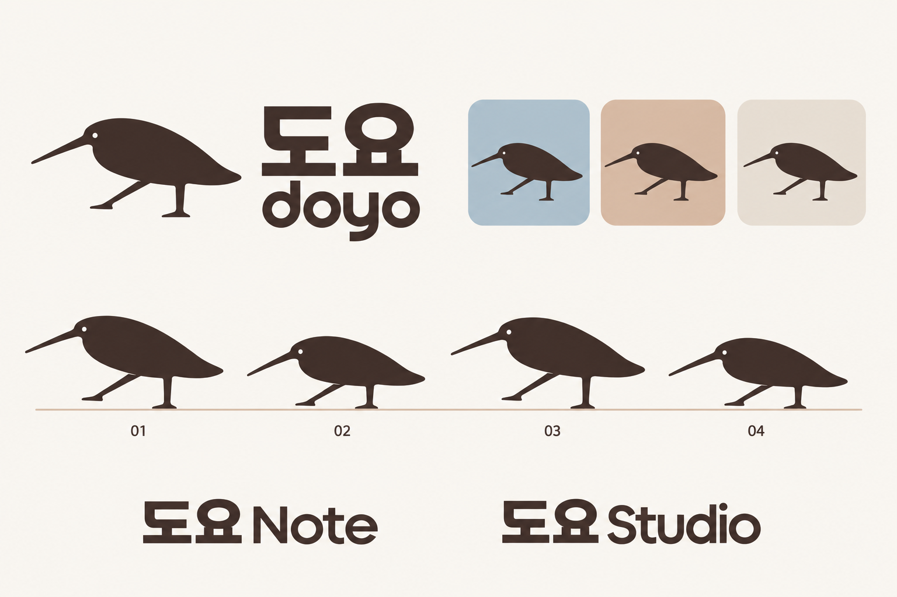
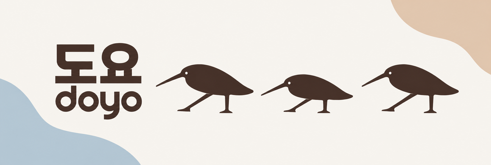
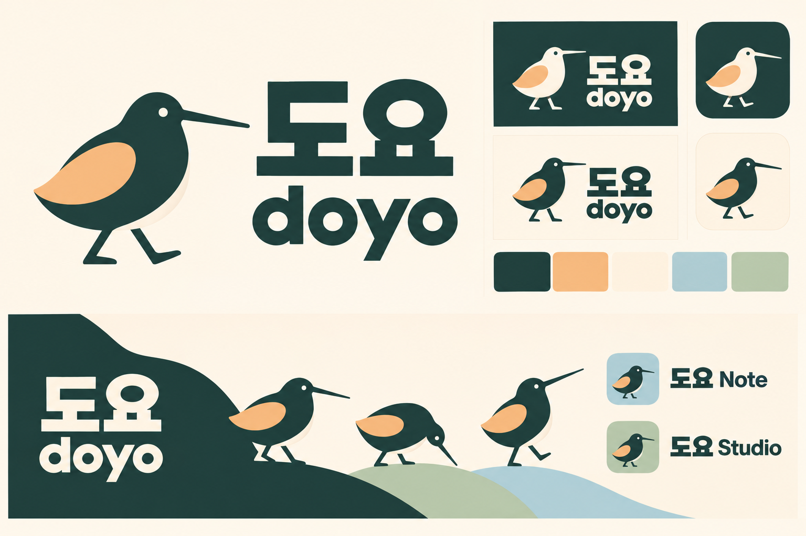
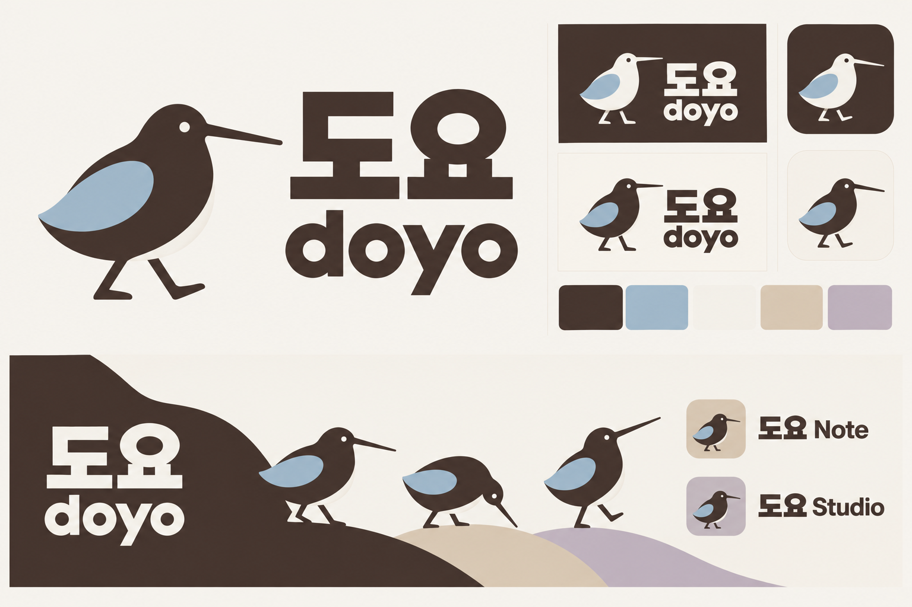
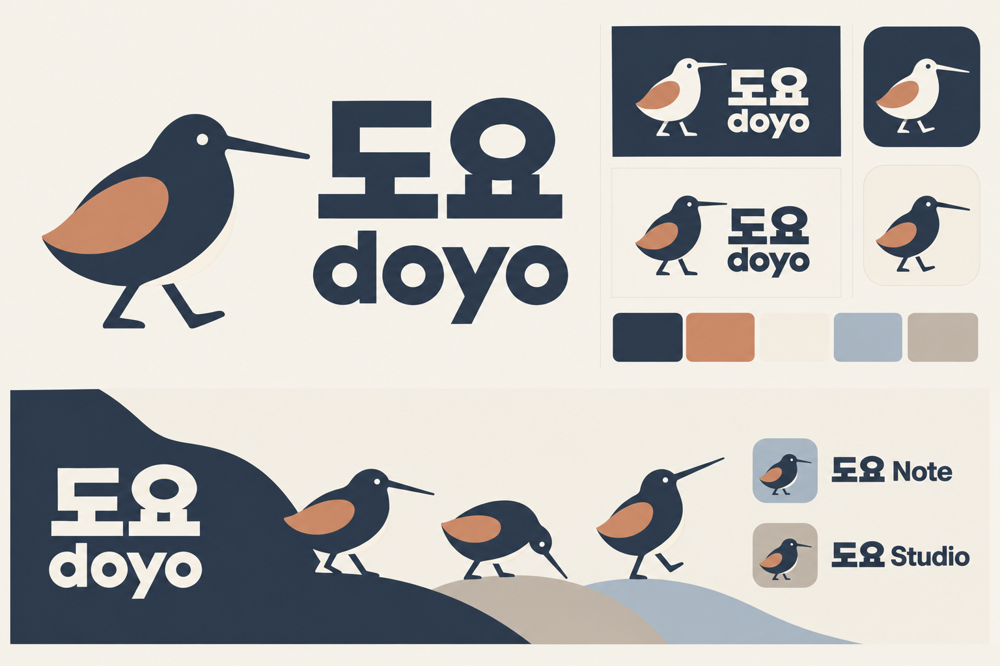
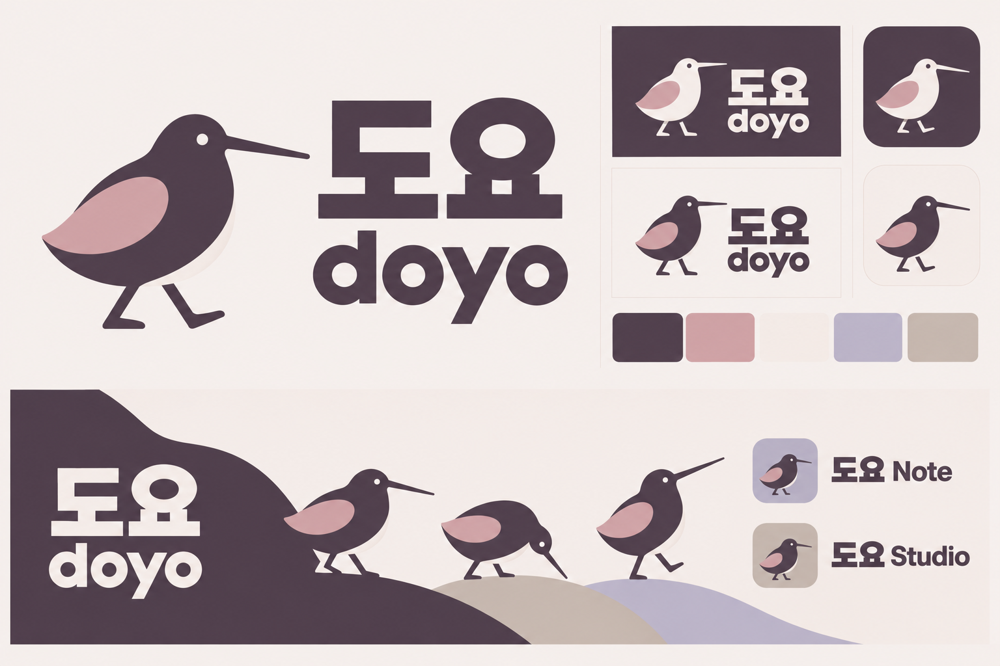

2026-10-22 · 코코아·블루그레이 선택 · 제품 미적용
도요, 들썩이는 실루엣
단색의 새와 다리의 접힘·폄으로 리듬을 만든다. 사용자가 선택한 A 코코아·블루그레이를 기준으로 한다.
선택 팔레트와 밝은·다크 화면 보기 · 색상 적용 원칙 · HEX 토큰

배너 적용

이전 자세와 비교: 로고 v4 · 배너 v4 · 로고 v3 · 배너 v3 · 로고 v2 · 배너 v2 · 로고 v1 · 배너 v1


앞선 팔레트 비교 기록 보기
색 분할형 새를 사용했던 이전 탐색이다. 현재 단색 방향의 확정 팔레트가 아니다.



